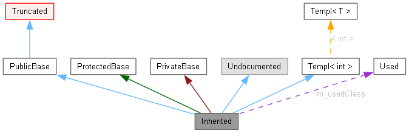

Тази страница обяснява как да интерпретирате графиките, генерирани от doxygen.
Разгледайте следният пример:
class Invisible { };
class Truncated : public Invisible { };
class Undocumented { };
class PublicBase : public Truncated { };
template<class T> class Templ { };
class ProtectedBase { };
class PrivateBase { };
class Used { };
class Inherited : public PublicBase,
protected ProtectedBase,
private PrivateBase,
public Undocumented,
public Templ<int>
{
private:
Used *m_usedClass;
};
Правоъгълниците в този граф имат следното значение:
Правоъгълниците в този граф имат следното значение:
-
Запълненият сиво правоъгълник представлява структурата или клас, за който е създаден графа.
-
Правоъгълника с черна рамка обозначава документирана структура или клас.
-
Правоъгълника със сива рамка обозначава недокументирана структура или клас.
-
Правоъгълника с червена рамка обозначава документирана структура или клас закойто не са показани всички отношения наследяване/съдържание. A Графa eсъкратен, ако не се вписва в определените граници.
Стрелките имат следното значение:
-
Тъмносиня стрелка се използва за визуализиране на публично наследство между два класа.
-
Тъмнозелена стрелка се използва за защитено наследяване.
-
Тъмночервена стрелка се използва за частно наследяване.
-
Лилава пунктирана стрелка се използва, ако клас се съдържа или използва от друг клас. Стрелката указва променлива(и) чрез който е достъпен посоченият клас или структура.
-
Жълта пунктирана стрелка обозначава връзка между екземпляр на шаблон и класът шаблон, от който е създаден. Стрелката указва параметрите на шаблона на екземпляра.